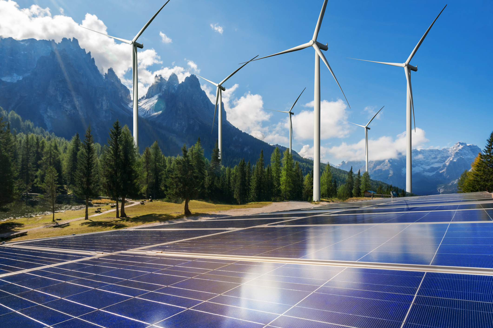

My topic is new energy.
With the development of modern civilization, people's awareness of environmental protection has gradually increased, and with the progress of science and technology, new energy as the main force of environmental protection has gradually entered people's vision. In recent years, concepts related to new energy frequently appear, such as new energy vehicles, new energy batteries, new energy lamps and so on.
As a hot topic, new energy has been analyzed and studied from different fields. For example, scientists study new materials, economists study economic utility, and ordinary people study electricity saving. As a student majoring in data science, I hope to study the hot topic of new energy by means of data science, which I think is very meaningful.
This project studies the popularity of new energy by obtaining a certain number of tweets from twitter, and conducts data analysis around the following ten questions.
What are the new energy-related topics that people are most concerned about?
What are the trending topics related to new energy on Twitter?
Are tweets that include the keyword "new energy" really related to new energy?
Is Tesla really the hottest new energy topic as rumored?
Are people really paying attention to new energy? Or are you just riding the heat?
Do tweets about new energy really mean anything?
Are new energy-related ads effective?
Is Twitter a meaningful community to talk about new energy?
Are popular users or ordinary users concerned about new energy?
Are well-liked tweets about new energy necessarily meaningful?
